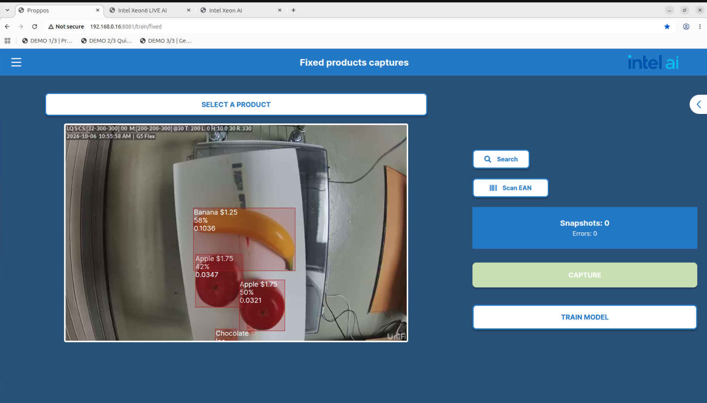
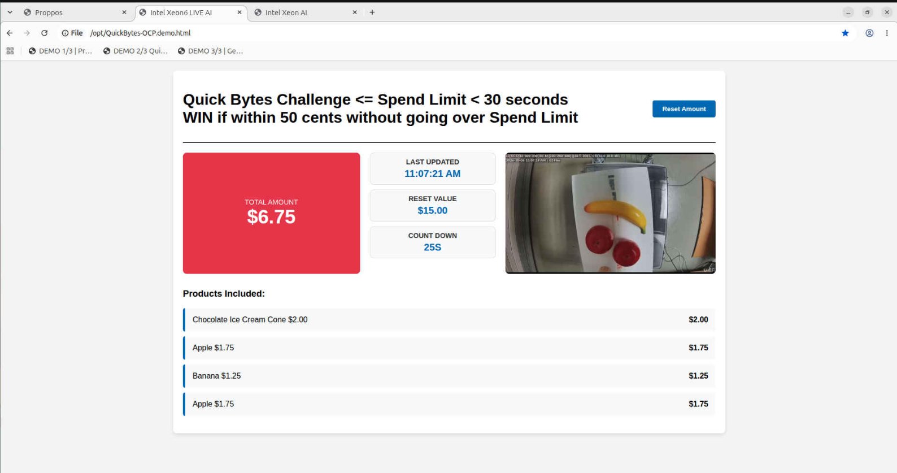
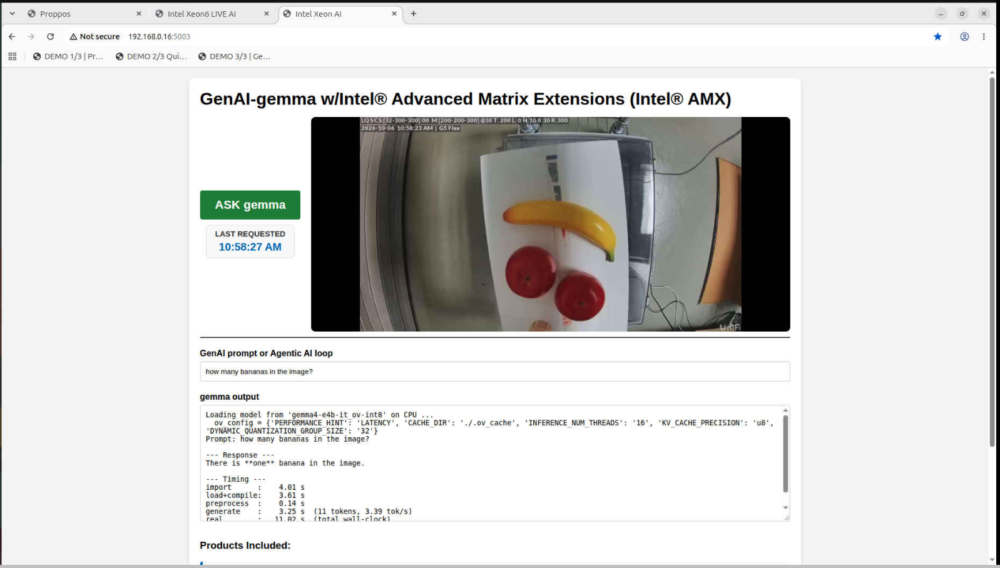

Welcome — Modular CV and GenAI on Xeon at the Edge
Welcome! This project showcases Modular CV and GenAI on Xeon at the Edge. Where OCP offers the hardware modularity, this demo shows AI modularity at the Edge — CV / GenAI / Agentic (not live).
The live demo uses an HPE DL110 with a 40-core Xeon6 CPU w/ Intel AMX (no GPU!), Proppos FastPay for the front-end computer vision object detection, encoding, and attribute association, plus an optional GenAI back-end.
Incremental CV training/encoding on the Xeon is used together with generic YOLO to identify specific objects (e.g., “banana” instead of generic “fruit,” along with price, calories, etc.) before encoding, and Google Gemma performs the GenAI analysis (e.g., How many calories? How much do I need to pay? Any allergy concerns? etc.).
In other words, this is the Proppos commercial application, “extended” to use the latest Google Gemma model-set and associated optimizations to serve responses in a few seconds, using just a few cores.
Prepared By
- Repository: https://github.com/stephen-palermo/modularAI.git
- Author: Stephen Palermo — stephen.t.palermo@intel.com, Tech Lead Xeon Edge AI
- Supporting repository: https://github.com/stephen-palermo/workshop-xeon-edge-ai-gemma.git
Getting Started
Follow these steps to showcase the technology and run the demo.
(a) NUC
- Browser for LIVE AI Computer Vision: http://192.168.0.16:8081
- Browser for LIVE AI API feeding the “QuickBytes Game”:
file:///opt/QuickBytes-OCP.demo.html - Browser for LIVE AI Small Language Model (Gemma E2B): http://192.168.0.16:5003/
(b) Xeon AI Server — HPE DL110 w/ Xeon6 w/ Intel AMX
Desktop Terminal — START the back-end:
cd /opt/workshop-xeon-edge-ai-gemma
./9.proppos-backend-start.shExample Output
Expected output that matches up with the Getting Started section.
(a) NUC
LIVE AI Computer Vision (http://192.168.0.16:8081) — Fixed products captures view detecting objects in real time (e.g., Banana $1.25, Apple $1.75, Chocolate Ice Cream Cone $2.00) with confidence scores:

LQ S CS:[32-300-300]:00 M:[200-200-300] @30 T: 200 L: 0 H:10.0:30 R:303
Banana $1.25 65% 0.1037
Apple $1.75 42% 0.0347
Apple $1.75 44% 0.0322
Chocolate ...LIVE AI API feeding the “QuickBytes Game” (file:///opt/QuickBytes-OCP.demo.html) — Quick Bytes Challenge totaling the detected products against the spend limit:

Quick Bytes Challenge <= Spend Limit < 30 seconds
WIN if within 50 cents without going over Spend Limit
TOTAL AMOUNT: $6.75
RESET VALUE: $8.00
COUNT DOWN: 25S
Products Included:
Chocolate Ice Cream Cone $2.00
Apple $1.75
Banana $1.25
Apple $1.75LIVE AI Small Language Model (http://192.168.0.16:5003/) — GenAI-gemma w/ Intel® Advanced Matrix Extensions (Intel® AMX) answering a prompt about the live camera image:

GenAI-gemma w/Intel(R) Advanced Matrix Extensions (Intel(R) AMX)
Prompt: how many bananas in the image?
--- Response ---
There is **one** banana in the image.
--- Timing ---
import : 4.01 s
load+compile: 3.61 s
preprocess : 0.14 s
generate : 3.25 s (11 tokens, 3.39 tok/s)
real : 11.02 s (total wall-clock)(b) HPE DL110
Xeon AI Server back-end start (./9.proppos-backend-start.sh) — Flask back-end serving the Proppos Gemma-4-E2B app:

* Serving Flask app 'backend-Proppos-gemma-4-e2b'
* Debug mode: on
WARNING: This is a development server. Do not use it in a production deployment. Use a production WSGI server instead.
* Running on all addresses (0.0.0.0)
* Running on http://127.0.0.1:5003
* Running on http://192.168.0.16:5003
Press CTRL+C to quit
* Restarting with stat
* Debugger is active!
* Debugger PIN: 128-410-576Technology
The entire pipeline runs on an Intel Xeon6 CPU with Intel Advanced Matrix Extensions (Intel AMX) — no GPU required. Intel AMX is a built-in matrix-multiply accelerator (tile registers + TMUL) that dramatically speeds up the dense INT8/BF16 math at the heart of modern AI, directly on the CPU.
(1) Intel AMX for Computer Vision
- Usage: The YOLO-based object detection, incremental CV training, and encoding/attribute-association work are offloaded to Intel AMX tiles, accelerating the convolution and matrix operations that dominate CV inference.
- Benefits: High-throughput, low-latency detection of specific objects (e.g., “banana” instead of generic “fruit,” with price and calories) in real time — all on the CPU, with no discrete accelerator, no data movement to a GPU, and consistent performance at the Edge.
(2) Intel AMX for Small Language Models (Gemma — not an LLM)
- Usage: The Google Gemma (E2B) Small Language Model inference uses Intel AMX to accelerate the BF16/INT8 matrix multiplications in the transformer layers.
- Benefits: GenAI responses (e.g., How many calories? How much do I need to pay? Any allergy concerns?) are served in a few seconds using just a few cores. Because it’s a right-sized Small Language Model — not a large LLM — Intel AMX delivers the needed throughput without a GPU, keeping the model and memory footprint compact and Edge-friendly.
(3) Modular CV + SLM for LangChain Agentic Workflows
- Usage: Both the computer vision stage and the Gemma Small Language Model are composed into LangChain-based agentic workflows, where CV detections feed the SLM for reasoning and the agent orchestrates multi-step tasks.
- Benefits of Intel Xeon w/ AMX:
- Everything stays on the CPU — CV and SLM share the same Intel AMX-accelerated host, with no cross-device data transfers.
- No GPU — no discrete accelerator to provision, cool, or maintain.
- Lower power — no GPU power envelope; efficient CPU-only operation.
- Lower total cost of ownership (TCO) — simpler, modular hardware that leverages the OCP platform, reducing acquisition and operational costs at the Edge.
Network Architecture Example
The demo runs on a compact, modular Edge network. The Intel Corporation uplink connects through the Modular AI for OCP Router into a USW Flex 2 switch, which fans out to the Xeon AI server (and its iLO management), the Gen12 node, the G5 Flex camera, and the NUC front-end.

| Node | Role |
|---|---|
| Intel Corporation | Internet / corporate uplink |
| Modular AI for OCP Router | Edge gateway/router for the Modular AI for OCP network |
| Switch (USW Flex 2) | Distribution switch connecting all Edge devices |
| ILO.HPE.DL110.Xeon6 | Out-of-band iLO management for the Xeon6 AI server |
| HPE.DL110-Gen12 | HPE DL110 Gen12 Xeon6 w/ Intel AMX — AI server running the CV + Gemma back-end |
| G5 Flex | Camera providing the live video feed for computer vision |
| NUC | Front-end client running the demo browsers (CV, QuickBytes game, Gemma SLM) |
Modular Technology Showcase Flow
This demo showcases AI modularity by chaining independent stages — each running on the Edge, entirely on Intel Xeon w/ AMX, with NO GPU.
- Computer Vision + SWIN encoding (Commercial App = Proppos FastPay): Computer vision first identifies basic objects (e.g., fruit), then SWIN encoding further identifies the specific product (e.g., banana) for a FastPay-type application. This is the commercial Proppos application.
- Commercial App API → Price-is-Right challenge: The commercial app API transfers the computer vision output for further processing, such as a challenge “Price-is-Right” game — the objective is to match a random amount in less than 30 seconds by reading the live output of computer vision.
- Computer Vision → Small Language Model (Google Gemma): The computer vision output is fed into a Small Language Model for further analysis. The SLM shown is the commercial Google Gemma model.
(identify object: fruit)
(specific product: banana)
Commercial App + API
(match amount < 30s)
Small Language Model
All running on the Edge, all on Intel Xeon w/ AMX — NO GPU.